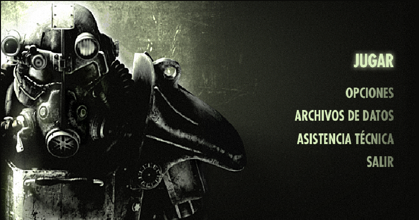

Descripción del juego
Fallout 3 es un vídeojuego de rol con carácter post-apocalíptico tanto para consolas como para ordenador. Ha sido desarrollado y publicado por Bethesda Softworks y se presenta como la tercera parte de la saga Fallout y como una secuela de Fallout desarrollado por Interplay y Fallout 2 desarrollado por Black Isle Studios. Fue lanzado el 28 de octubre en Norteamérica, el 31 de octubre en Europa y el 4 de diciembre en Japón. Está disponible para PC, Xbox 360 y Playstation 3. El juego toma lugar en el año 2277 en la Costa Este del lugar antes conocido como Estados Unidos de América, principalmente en Washington DC, Maryland y Virginia. La jugabilidad incluye combate en tiempo real y perspectiva de primera o tercera persona, en contraste con los juegos anteriores, que estaban basados en combates por turnos y perspectiva isométrica.
valoracion del juego
Trama
Este fallout, al igual que todos los anteriores, no destaca por la trama prinicpal.El encanto de este juego reside en ir descublriendo el mundo que se nos presenta hablando con los NPC y realizando las misiones que vamos cogiendo. El mundo es enorme y con muchas cosas para hacer. Los dialogos con los NPC son buenos con varias opciones en cada caso. En función de las elecciones que hagamos seguiremos un camino u otro.
Graficos
Al ser un juego antiguo los gráficos son mejorables aunque tampoco se pueden considerar malos. Los paisajes y los NPC están correctamente modelados aunque se nota el paso del tiempo
Jugabilidad
La jugabilidad se puede considerar buena. Hay mucha libertad a la hora de explorar el yermo. Los combates con muy divertidos con la opción VAR que permite congelar el tiempo para apuntar y disparar a zonas concretas de los enemigos. Los movimientos del personaje son fluidos aunque también se nota el paso del tiempo.
Conclusion
Fallout 3 es un juego muy divertido. a pesar del paso de los
años todavía sigue conservando el encanto de antaño y si no los has jugado todavia este
es un buen movimiento ya que te dará muchas horas de diversión.
No es recomendable para jugadores que no gusten de jeugos de rol ya que tiene bastante
conversacion
La nota para este juego es de un 9.1